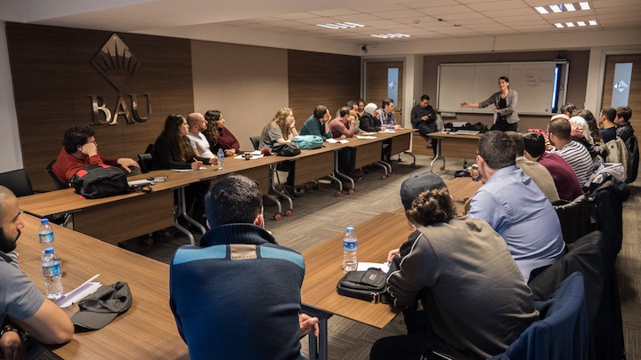
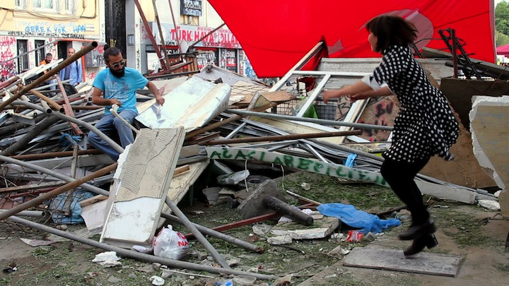

Teaching & Courses
Film screening and master class
ONE MILLION STEPS - Master class
Description
Using the film 'One Million Steps' this master class treats how to use dance in a narrative story.
About the film
A tap dancer performs, while elsewhere people run from the tear gas of the police. Two worlds apart - if it wasn’t for an unexpected opening in the floor, right in front of the dancer… She decides to jump, and lands in the middle of the social protests in Istanbul. The dancer witnesses the people’s fight for personal freedom and living space, and takes the opportunity to transform her dance into a statement of solidarity.
Course content
- Narrative use of dance in a narrative story
- How to approach a foreign political conflict
- On Crowdfunding your project and alternative methods of distribution for short films

